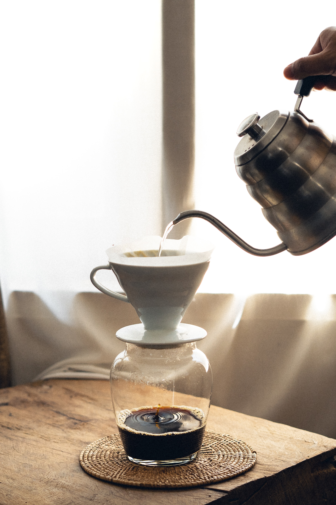

//insert menu header with react



Our Story
Traditionally, coffee has been cherished as a beverage that accompanies moments of connection and reflection. At Càphê, we aim to rekindle that tradition by infusing mindfulness into the hustle and bustle of daily life through the simple act of brewing and savoring coffee.
Our meticulously chosen beans and lifestyle offerings are thoughtfully crafted to create a pause in your routine—a moment to awaken the senses and replenish the mind.

From the outset of our journey, we embarked on an extensive exploration to discover coffee plantations at Đắk Lắk, Vietnam, that adhere to organic and sustainable practices, ensuring the purest expression of the bean.
When you take a sip of our coffee, you experience its rich and nuanced flavors in their most natural, unadulterated state.
Càphê strives to bring you not only the perfect cup of coffee but also an opportunity to embrace mindfulness and find serenity amidst the everyday rush.

With great care, we curate a collection of teas and lifestyle offerings, each thoughtfully selected to create a meaningful pause in everyday life, allowing the mind to both empty and replenish.
Our tea products are from a family-run Mộc Châu farm- who exclusively cultivate their teas using organic and natural methods.
By adhering to these principles, we ensure that every sip of our tea presents its authentic, unadulterated essence, true to its natural and raw form.